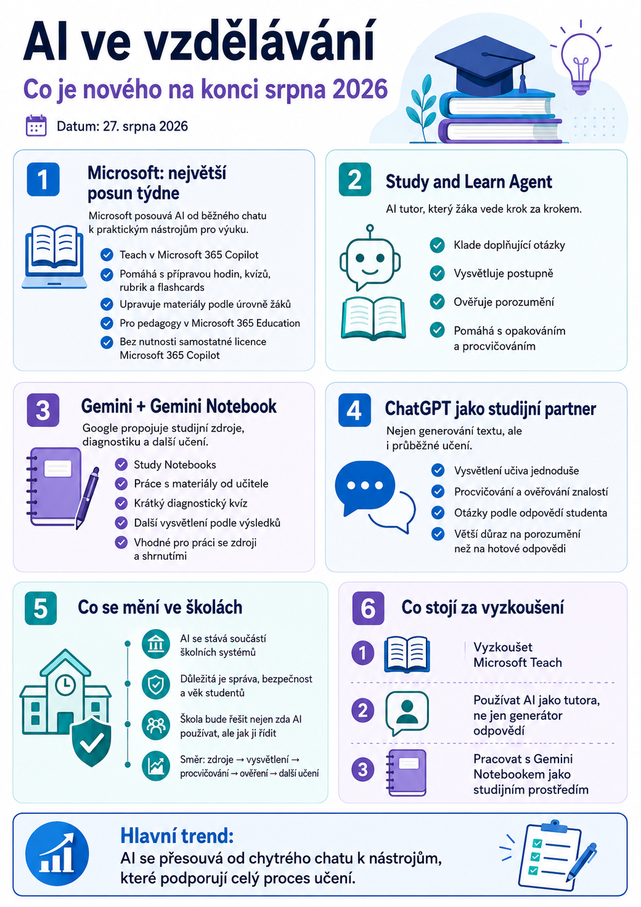

Pro učitele je důležité hlavně to, že se AI postupně posouvá od obyčejného chatování k nástrojům, které přímo podporují plánování výuky, procvičování, práci se zdroji a individuální učení žáků.
Microsoft: Teach, Study and Learn a větší propojení s Microsoft 365
Microsoft na konci srpna představil další novinky pro školy v rámci svého „Back to School“ přehledu.
Pro učitele je nejzajímavější modul Teach v Microsoft 365 Copilot. Ten může pomoci například s:
- přípravou plánů hodin,
- tvorbou kvízů,
- přípravou hodnoticích rubrik,
- vytvářením flashcards,
- úpravou výukových materiálů podle úrovně žáků,
- přizpůsobením obtížnosti textu nebo úkolů.
Velkou výhodou je, že Teach je dostupný pedagogům v prostředí Microsoft 365 Education a není nutné mít samostatnou placenou licenci Microsoft 365 Copilot.
Microsoft také rozšiřuje možnosti pro studenty. Správci škol mohou zpřístupnit některé AI funkce žákům od 13 let, například Study and Learn Agent, Copilot Notebooks nebo Learning Activities.
Z pohledu školy je to zajímavý posun. AI už není jen samostatný chatbot, ale postupně se stává součástí celého školního prostředí Microsoft 365.
Study and Learn Agent: AI, která nemá jen říct odpověď
Z pedagogického hlediska je zajímavý především Study and Learn Agent.
Jeho cílem není pouze odpovědět na otázku, ale vést studenta při učení. Může například:
- klást doplňující otázky,
- vysvětlovat učivo krok za krokem,
- ověřovat, zda student tématu opravdu rozumí,
- pomáhat při opakování,
- vytvářet procvičovací úlohy.
To je důležitý rozdíl oproti běžnému používání AI stylem:
„Vyřeš mi tento úkol.“
Smysluplnější využití může vypadat například takto:
„Ptej se mě na Ohmův zákon a pokračuj, dokud nebude jasné, že mu skutečně rozumím.“
Právě tento způsob práce může být pro vzdělávání mnohem zajímavější než pouhé generování hotových odpovědí.
Gemini a Gemini Notebook: zdroje, diagnostika a další učení
Také Google pokračuje v propojování Gemini a Gemini Notebooku.
Zajímavý je zejména koncept Study Notebooks, který kombinuje práci se studijními materiály, procvičování a následné přizpůsobování dalšího studia.
Student může pracovat například s materiály připravenými učitelem a následně:
- prostudovat zdroje,
- absolvovat krátký diagnostický kvíz,
- zjistit, kterým částem učiva nerozumí,
- získat další vysvětlení nebo procvičování,
- pokračovat podle svých výsledků.
Gemini Notebook se tak postupně mění z nástroje pro práci se zdroji na mnohem širší studijní prostředí.
Pro školy, které používají Google Workspace for Education, může být tento směr velmi zajímavý. Některé funkce však mohou být omezené na konkrétní typy účtů nebo licence.
ChatGPT: od generování textu k průběžnému učení
OpenAI v srpnu znovu zdůraznilo využití ChatGPT jako nástroje pro učení, procvičování a ověřování znalostí.
Zajímavý je hlavně trend, kdy studenti nepoužívají AI pouze pro vytvoření výsledného textu, ale jako průběžného studijního partnera.
Místo zadání:
„Napiš mi referát o Evropské unii.“
může student například použít:
„Vysvětli mi Evropskou unii jednoduše a potom mě z tématu vyzkoušej.“
nebo:
„Polož mi deset otázek a podle mých odpovědí zjisti, čemu ještě nerozumím.“
Takové využití AI má z pedagogického hlediska mnohem větší hodnotu.
AI se postupně stává běžnou součástí školních systémů
Zajímavý je také širší trend.
Microsoft, Google i OpenAI postupně vytvářejí prostředí určená přímo pro školy, ve kterých může být používání AI:
- řízené školou,
- spravované administrátorem,
- přizpůsobené věku studentů,
- propojené s výukovými materiály,
- bezpečnější než používání náhodných veřejných chatbotů.
To může během několika let zásadně změnit způsob, jakým školy k AI přistupují.
Otázkou už nebude pouze:
„Smějí studenti používat AI?“
Mnohem důležitější bude:
„Jakou AI škola studentům poskytne a jak je naučí ji správně používat?“
Co stojí za vyzkoušení
Z aktuálních novinek bych učitelům doporučila sledovat především tři oblasti.
1. Microsoft Teach
Pokud škola používá Microsoft 365 Education, stojí za to zkontrolovat, zda je Teach již dostupný.
Může výrazně urychlit přípravu:
- pracovních listů,
- kvízů,
- plánů hodin,
- hodnoticích kritérií,
- diferencovaných materiálů.
2. AI jako tutor místo generátoru odpovědí
Vyzkoušejte zadání, při kterých AI studentovi odpověď rovnou neprozradí.
Například:
Takový způsob práce může být vhodný při opakování nebo domácí přípravě.
3. Gemini Notebook jako studijní prostředí
Gemini Notebook stojí za vyzkoušení především tam, kde mají studenti pracovat s konkrétními zdroji.
Učitel může připravit například:
- text,
- prezentaci,
- pracovní materiály,
- kapitolu učebnice,
- vlastní poznámky.
Student potom může nad stejnými zdroji vytvářet otázky, shrnutí, kvízy nebo studijní přehledy.
Co z toho plyne pro učitele
Nejdůležitější změnou není vznik dalšího nového AI nástroje.
Podstatnější je, že se jednotlivé systémy začínají propojovat do celého výukového workflow:
A právě tady bude podle mě v následujícím školním roce nejzajímavější sledovat vývoj.
AI se totiž pomalu přesouvá z role „chytrého generátoru textu“ do role nástroje, který může podporovat celý proces učení.
Pro školy bude proto stále důležitější nejen rozhodnout, zda AI používat, ale hlavně jak ji začlenit do výuky tak, aby studentům skutečně pomáhala přemýšlet, učit se a pracovat samostatně.